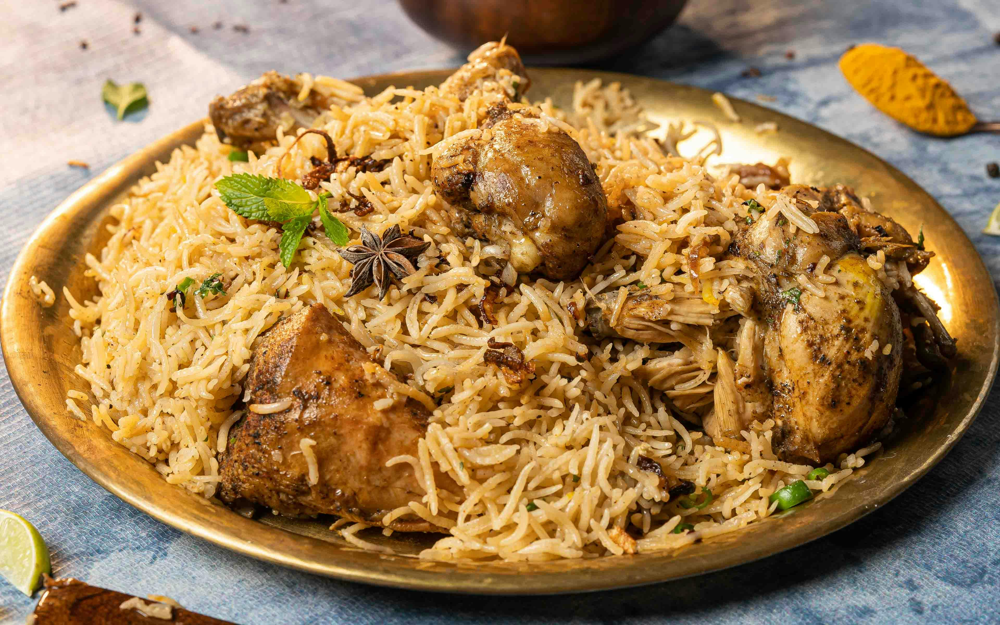

Home
Chicken biryani

Description
Chicken Biryani is a flavorful and aromatic dish made with long-grain basmati rice, tender chicken,and a blend of spices.It's popular Indian recipe that combines meat and rice into a satisfying meal,often served on special occasions.
Ingredients
- 2 cups basmati rice
- 500g chicken (marinated)
- 2 onions,sliced
- 1/2 cup yoghurt
- 1 tbsp ginger garlic paste
- Whole spices (bay leaf,cloves,cardomom,cinnamon)
- Biryani masala
- Coriander & mint leaves
- Saffron milk
- Oil/ghee, salt
Steps
- Soak rice for 30 mins and cook it until 70% done.
- Marinate chicken with yogurt,spices,and ginger-garlic paste for 1 hour.
- Fry onions until golden brown.
- Cook chicken until tender in spices.
- Layer cooked chicken and rice.Add fried onions,mint,coriander,and saffron milk.
- Seal the pot and dum cook (slow steam) for 20-25 mins.
- Serve hot with raita or salan.